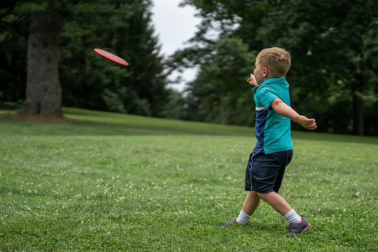

Frisbeegolfista yleisesti
Frisbeegolf on hieno ulkoilmaurheilu, joka yhdistää perinteisen frisbeen ja golfpelin elementit. Radat sijaitsevat usein kauniissa luontokohteissa, ja pelaajien tavoitteena on heittää frisbee koriin mahdollisimman vähin heittoin. Frisbeegolf on suosittu harrastus kaikenikäisille ja -tasoisille pelaajille, ja se tarjoaa loistavan tilaisuuden nauttia ulkoilmasta ja kilpailla samalla.
Frisbeegolfissa on tärkeää hallita erilaisten frisbeemallien lentorataa ja ottaa huomioon sääolosuhteet. Pelaajat käyttävät erityyppisiä frisbeitä, kuten draiverit, midarit ja putterit, saavuttaakseen parhaat mahdolliset heitot. Tarkkuus ja voima ovat avainasemassa, kun yritetään voittaa vastustajat tai saavuttaa hyvät tulokset omalla kierroksellaan.

Frisbeegolfissa kilpailuhenki yhdistyy ystävälliseen yhteisöllisyyteen. Monet harrastajat osallistuvat paikallisiin kilpailuihin ja turnauksiin, mutta suuri osa pelaa myös rentoina harjoituksina ystävien kanssa. Frisbeegolf onkin loistava tapa tavata uusia ihmisiä ja jakaa yhteinen intohimo ulkoilmaurheiluun.